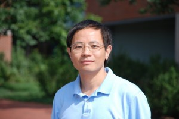

Research experience
2013 - present, Dr. Gong Chen's lab, Penn State University
The major goal of my research is to find an optmized small molecule formula to reprogram human astrocytes to functional neurons.
2010 - 2013, Undergraduate Research, Dr. Jiang-Ning Zhou's lab, USTC
Skills
My advisors
-

Dr. Gong Chen
Professor of Biology -

Dr. Jiang-Ning Zhou
Professor of School of Life Sciences
Verne M. Willaman Chair in Life Sciences
Laboratory of In Vivo Reprogramming
Penn State University
CAS Key laboratory of Brain Funtion and Disease
University of Science and Technology of China